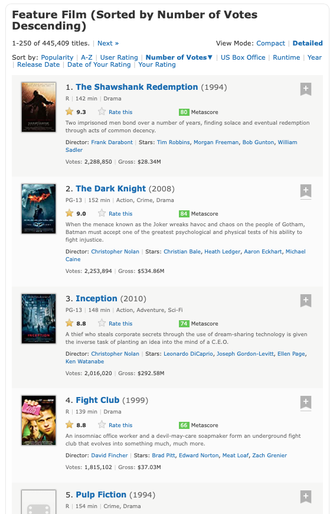

Regularni izrazi¶
Običajno moramo podatke, ki jih želimo analizirati, najprej prečistiti. Na primer, svetovni splet je bogat vir podatkov, vendar so ti dostikrat dostopni le v formatu HTML, ki poleg koristne vsebine vsebuje še marsikaj. Recimo, da nas zanimajo podatki o 250 filmih z največ glasovi na strani IMDB. Vidimo, da stran ponuja veliko koristnih podatkov: naslov, leto izida, dolžno, žanre, ocene, igralce, opise, …

Če pa v brskalniku shranimo izvorno kodo in HTML datoteko odpremo, pa je podatke težko najti.
with open('../01-regularni-izrazi/predavanja/250-najbolj-znanih-filmov.html') as f:
html = f.read()
print(html[:1000])
<!DOCTYPE html>
<html
xmlns:og="http://ogp.me/ns#"
xmlns:fb="http://www.facebook.com/2008/fbml">
<head>
<script type='text/javascript'>var ue_t0=ue_t0||+new Date();</script>
<script type='text/javascript'>
window.ue_ihb = (window.ue_ihb || window.ueinit || 0) + 1;
if (window.ue_ihb === 1) {
var ue_csm = window,
ue_hob = +new Date();
(function(d){var e=d.ue=d.ue||{},f=Date.now||function(){return+new Date};e.d=function(b){return f()-(b?0:d.ue_t0)};e.stub=function(b,a){if(!b[a]){var c=[];b[a]=function(){c.push([c.slice.call(arguments),e.d(),d.ue_id])};b[a].replay=function(b){for(var a;a=c.shift();)b(a[0],a[1],a[2])};b[a].isStub=1}};e.exec=function(b,a){return function(){try{return b.apply(this,arguments)}catch(c){ueLogError(c,{attribution:a||"undefined",logLevel:"WARN"})}}}})(ue_csm);
var ue_err_chan = 'jserr';
(function(d,e){function h(f,b){if(!(a.ec>a.mxe)&&f){a.ter.push(f);b=b||{};var c=f.logLevel||b.logLevel;c&&c!==k&&c!==m&&c!==n&&c!==p||a.ec++;c&&c
Pomagajmo si s pomožno funkcijo, ki poišče začetke in konce vseh neprekrivajočih se pojavitev danega niza v besedilu.
def vse_pojavitve(besedilo: str, iskani_niz: str):
konec_pojavitve = 0
while True:
try:
zacetek_pojavitve = besedilo.index(iskani_niz, konec_pojavitve)
konec_pojavitve = min(zacetek_pojavitve + len(iskani_niz), len(besedilo))
yield zacetek_pojavitve, konec_pojavitve
except ValueError:
break
list(vse_pojavitve('Ena sama je, mama!', 'ma'))
[(6, 8), (13, 15), (15, 17)]
Če želimo, lahko vsako pojavitev prikažemo v njenem kontekstu:
def pokazi_vse_pojavitve(besedilo: str, iskani_niz: str, velikost_konteksta=50):
for zacetek, konec in vse_pojavitve(besedilo, iskani_niz):
zacetek_konteksta = max(zacetek - velikost_konteksta, 0)
konec_konteksta = min(konec + velikost_konteksta, len(besedilo))
print(besedilo[zacetek_konteksta:konec_konteksta])
print((zacetek - zacetek_konteksta) * ' ' + (konec - zacetek) * '^')
pokazi_vse_pojavitve('Ena sama je, mama!', 'ma')
Ena sama je, mama!
^^
Ena sama je, mama!
^^
Ena sama je, mama!
^^
Recimo, da nas zanimajo podatki o Vojni zvezd:
pokazi_vse_pojavitve(html.replace('\n', ''), 'Star Wars')
href="/title/tt0076759/?ref_=adv_li_i"> <img alt="Star Wars: Episode IV - A New Hope"class="loadlate"loadlate
^^^^^^^^^
<a href="/title/tt0076759/?ref_=adv_li_tt">Star Wars: Episode IV - A New Hope</a> <span class="list
^^^^^^^^^
href="/title/tt0080684/?ref_=adv_li_i"> <img alt="Star Wars: Episode V - The Empire Strikes Back"class="loadl
^^^^^^^^^
<a href="/title/tt0080684/?ref_=adv_li_tt">Star Wars: Episode V - The Empire Strikes Back</a> <span
^^^^^^^^^
href="/title/tt0086190/?ref_=adv_li_i"> <img alt="Star Wars: Episode VI - Return of the Jedi"class="loadlate"
^^^^^^^^^
<a href="/title/tt0086190/?ref_=adv_li_tt">Star Wars: Episode VI - Return of the Jedi</a> <span cla
^^^^^^^^^
href="/title/tt2488496/?ref_=adv_li_i"> <img alt="Star Wars: Episode VII - The Force Awakens"class="loadlate"
^^^^^^^^^
<a href="/title/tt2488496/?ref_=adv_li_tt">Star Wars: Episode VII - The Force Awakens</a> <span cla
^^^^^^^^^
href="/title/tt0120915/?ref_=adv_li_i"> <img alt="Star Wars: Episode I - The Phantom Menace"class="loadlate"l
^^^^^^^^^
<a href="/title/tt0120915/?ref_=adv_li_tt">Star Wars: Episode I - The Phantom Menace</a> <span clas
^^^^^^^^^
href="/title/tt0121766/?ref_=adv_li_i"> <img alt="Star Wars: Episode III - Revenge of the Sith"class="loadlat
^^^^^^^^^
<a href="/title/tt0121766/?ref_=adv_li_tt">Star Wars: Episode III - Revenge of the Sith</a> <span c
^^^^^^^^^
href="/title/tt0121765/?ref_=adv_li_i"> <img alt="Star Wars: Episode II - Attack of the Clones"class="loadlat
^^^^^^^^^
<a href="/title/tt0121765/?ref_=adv_li_tt">Star Wars: Episode II - Attack of the Clones</a> <span c
^^^^^^^^^
href="/title/tt2527336/?ref_=adv_li_i"> <img alt="Star Wars: Episode VIII - The Last Jedi"class="loadlate"loa
^^^^^^^^^
<a href="/title/tt2527336/?ref_=adv_li_tt">Star Wars: Episode VIII - The Last Jedi</a> <span class=
^^^^^^^^^
tt3748528/?ref_=adv_li_i"> <img alt="Rogue One: A Star Wars Story"class="loadlate"loadlate="https://m.media-a
^^^^^^^^^
f="/title/tt3748528/?ref_=adv_li_tt">Rogue One: A Star Wars Story</a> <span class="lister-item-year text-m
^^^^^^^^^
V datoteki najdemo kar nekaj pojavitev, za vsako epizodo po dve: eno iz prikaza naslova in eno iz opisa slike. Vidimo, da so vsi naslovi podobne oblike: na začetku je značka <a href="/title/tt0123456/?ref_=adv_li_tt">, pri čemer se šifra spreminja od filma do filma, na koncu je </a>, med njima pa je naslov filma. Če bi se zelo potrudili, bi lahko spisali program, ki iz takega niza izlušči šifro in naslov.
def izlusci_sifro_in_naslov(niz):
pred_sifro = '<a href="/title/tt'
med_sifro_in_naslovom = '/?ref_=adv_li_tt">'
za_naslovom = '</a>'
zacetek_sifre = niz.index(pred_sifro) + len(pred_sifro)
konec_sifre = niz.index(med_sifro_in_naslovom)
zacetek_naslova = konec_sifre + len(med_sifro_in_naslovom)
konec_naslova = niz.index(za_naslovom)
sifra = int(niz[zacetek_sifre:konec_sifre])
naslov = niz[zacetek_naslova:konec_naslova]
return sifra, naslov
izlusci_sifro_in_naslov('<a href="/title/tt0076759/?ref_=adv_li_tt">Star Wars: Episode IV - A New Hope</a>')
(76759, 'Star Wars: Episode IV - A New Hope')
izlusci_sifro_in_naslov('<a href="/title/tt0086190/?ref_=adv_li_tt">Star Wars: Episode VI - Return of the Jedi</a>')
(86190, 'Star Wars: Episode VI - Return of the Jedi')
Podobno bi lahko naredili še za leto izida, dolžino in ostalo, vendar mora obstajati boljši način. Mi si bomo pogledali dva. Prvi način so regularni izrazi - ti so univerzalno (z manjšimi dialekti) razširjeni zapis vzorcev nizov, ki jih lahko uporabljamo za delo s kakršnim koli besedilom. Regularne izraze podpirajo praktično vsi programski jeziki in naprednejši urejevalniki besedil. Zaradi vseobče uporabnosti se bomo regularnim izrazom bolj posvetili, niso pa vedno najboljše orodje pri roki, saj zaradi splošnosti ne izkoristijo vse strukture, ki je na voljo. Zato si bomo ogledali še drugi način, knjižnico Beautiful Soup, ki je namenjena analizi HTML datotek.
Regularni izrazi v Pythonu¶
Za delo z regularnimi izrazi (ali regeksi) v Pythonu uporabljamo knjižnico re, ki je vključen v vsako različico Pythona. V njej je najbolj osnovna funkcija search, ki sprejme vzorec in besedilo, v katerem iščemo, ter vrne prvo pojavitev, predstavljeno z objektom razreda re.Match.
import re
re.search('ma', 'Ena sama je, mama!')
<re.Match object; span=(6, 8), match='ma'>
V objektu imamo dostop do začetka in konca pojavitve in njene vsebine. Uporabimo lahko tudi funkcijo re.finditer, ki vrne iterator po vseh pojavitvah:
list(re.finditer('ma', 'Ena sama je, mama!'))
[<re.Match object; span=(6, 8), match='ma'>,
<re.Match object; span=(13, 15), match='ma'>,
<re.Match object; span=(15, 17), match='ma'>]
S pomočjo te funkcije lahko na veliko bolj enostaven način napišemo funkcijo vse_pojavitve.
def vse_pojavitve(besedilo: str, vzorec: str):
for pojavitev in re.finditer(vzorec, besedilo):
yield pojavitev.start(), pojavitev.end()
pokazi_vse_pojavitve('Ena sama je, mama!', 'ma')
Ena sama je, mama!
^^
Ena sama je, mama!
^^
Ena sama je, mama!
^^
Seveda pa regularni izrazi pokažejo svojo pravo moč, ko začnemo uporabljati še ostale vzorce. Vse lahko najdete v uradni dokumentaciji, mi pa si poglejmo najbolj pogoste.
Vzorci za znake¶
Katerikoli znak predstavimo s piko:
pokazi_vse_pojavitve('Ena sama je, mama!', '.a')
Ena sama je, mama!
^^
Ena sama je, mama!
^^
Ena sama je, mama!
^^
Ena sama je, mama!
^^
Ena sama je, mama!
^^
pokazi_vse_pojavitve('Ena sama je, mama!', '.m')
Ena sama je, mama!
^^
Ena sama je, mama!
^^
Ena sama je, mama!
^^
Piko samo predstavimo z vzorcem \.. Pri tem je potrebno upoštevati, da je vzorec sestavljen iz dveh znakov: poševnice in pike, zato je treba v Pythonu za poševnico uporabiti ubežni znak:
pokazi_vse_pojavitve('akad. prof. dr. Jana Obvlada', '\\.')
akad. prof. dr. Jana Obvlada
^
akad. prof. dr. Jana Obvlada
^
akad. prof. dr. Jana Obvlada
^
Ker veliko vzorcev uporablja poševnice, dvojne poševnice pa je nadležno pisati, bomo raje uporabili surove nize, v katerih Python ne uporablja ubežnih znakov in \ pomeni preprosto \. Dobimo tako, da pred narekovaj napišemo r.
pokazi_vse_pojavitve('akad. prof. dr. Jana Obvlada', r'\.')
akad. prof. dr. Jana Obvlada
^
akad. prof. dr. Jana Obvlada
^
akad. prof. dr. Jana Obvlada
^
Običajno surove nize uporabljamo za zapis regularnih izrazov (tudi Visual Studio Code v surovih nizih obarva regularne izraze), vendar r ne pomeni regex temveč raw.
Vse števke predstavimo z vzorcem \d, vse črke z vzorcem \w, vse bele znake (presledke, tabulatorje, znake za novo vrstico) pa z vzorcem \s:
pokazi_vse_pojavitve('Potrebujem 500g moke.', r'\d+')
Potrebujem 500g moke.
^^^
pokazi_vse_pojavitve('Potrebujem 500g moke.', r'\w+')
Potrebujem 500g moke.
^^^^^^^^^^
Potrebujem 500g moke.
^^^^
Potrebujem 500g moke.
^^^^
pokazi_vse_pojavitve('Potrebujem 500g moke.', r'\s+')
Potrebujem 500g moke.
^
Potrebujem 500g moke.
^
Če uporabimo veliko tiskano črko, dobimo komplement. Tako vzorcu \D ustrezajo vsi znaki razen števk, vzorcu \W vsi znaki razen črk, vzorcu \S pa vsi znaki razen belih.
pokazi_vse_pojavitve('Potrebujem 500g moke.', r'\D+')
Potrebujem 500g moke.
^^^^^^^^^^^
Potrebujem 500g moke.
^^^^^^^
pokazi_vse_pojavitve('Potrebujem 500g moke.', r'\W+')
Potrebujem 500g moke.
^
Potrebujem 500g moke.
^
Potrebujem 500g moke.
^
pokazi_vse_pojavitve('Potrebujem 500g moke.', r'\S+')
Potrebujem 500g moke.
^^^^^^^^^^
Potrebujem 500g moke.
^^^^
Potrebujem 500g moke.
^^^^^
Omenimo tudi vzorca \b ter \B (boundary). Oba sta ničelne širine, torej sama ne označujeta nobenega znaka. \b označuje pozicijo med besednim znakom (karkoli ujemajoče z \w) ter nebesednim znakom (karkoli ujemajoče z \W).
pokazi_vse_pojavitve('Je pravo vprašanje kaj ali zakaj?', r'\bkaj\b')
Je pravo vprašanje kaj ali zakaj?
^^^
Vzorec \B pa predstavlja ravno obratno. Uporabimo ga, kadar iskani del ni na začetku ali koncu besede.
pokazi_vse_pojavitve('Svet ni niti bel, niti črnobel.', r'\Bbel\b')
Svet ni niti bel, niti črnobel.
^^^
Če se želimo omejiti na posamezne znake ali posamezen razpon zaporednih znakov, jih naštejemo med oglatimi oklepaji:
pokazi_vse_pojavitve('ata, mama, teta, stric', r'.[aeiou].')
ata, mama, teta, stric
^^^
ata, mama, teta, stric
^^^
ata, mama, teta, stric
^^^
ata, mama, teta, stric
^^^
pokazi_vse_pojavitve('ata, mama, teta, stric', r'.[aeiou][a-z]')
ata, mama, teta, stric
^^^
ata, mama, teta, stric
^^^
ata, mama, teta, stric
^^^
Če kot prvi znak v oglatih oklepajih damo ^, dobimo komplement:
pokazi_vse_pojavitve('ata, mama, teta, stric', r'.[^aeiou].')
ata, mama, teta, stric
^^^
ata, mama, teta, stric
^^^
ata, mama, teta, stric
^^^
ata, mama, teta, stric
^^^
ata, mama, teta, stric
^^^
ata, mama, teta, stric
^^^
ata, mama, teta, stric
^^^
Kvantifikatorji¶
Z * označimo poljubno mnogo ponovitev danega vzorca:
pokazi_vse_pojavitve('Oddal sem davčno napoved', r'd*a')
Oddal sem davčno napoved
^^^
Oddal sem davčno napoved
^^
Oddal sem davčno napoved
^
Če želimo, da se vzorec pojavi vsaj enkrat, uporabimo +:
pokazi_vse_pojavitve('Oddal sem davčno napoved', r'd+a')
Oddal sem davčno napoved
^^^
Oddal sem davčno napoved
^^
Kvantifikatorja * in + sta požrešna, kar pomeni, da poskusita zajeti kolikor znakov lahko:
pokazi_vse_pojavitve('Oddal sem davčno napoved', r'd.*a')
Oddal sem davčno napoved
^^^^^^^^^^^^^^^^^^
pokazi_vse_pojavitve('Oddal sem davčno napoved', r'd.+a')
Oddal sem davčno napoved
^^^^^^^^^^^^^^^^^^
Če želimo najti najkrajše možne pojavitve, moramo na koncu dodati še ?:
pokazi_vse_pojavitve('Oddal sem davčno napoved', r'd.*?a')
Oddal sem davčno napoved
^^^
Oddal sem davčno napoved
^^
pokazi_vse_pojavitve('Oddal sem davčno napoved', r'd.+?a')
Oddal sem davčno napoved
^^^
Oddal sem davčno napoved
^^^^^^^^^
Če uporabimo samo ?, to pomeni morebitno pojavitev vzorca:
pokazi_vse_pojavitve('Oddal sem davčno napoved', r'da?')
Oddal sem davčno napoved
^
Oddal sem davčno napoved
^^
Oddal sem davčno napoved
^^
Oddal sem davčno napoved
^
Če želimo dobiti znake *, + in ? uporabimo \*, \+ in \?.
Kvantifikatorji *, + in ? so posebni primeri kvantifikatorja {m,n}, ki predstavlja katerokoli število ponovitev med m in n, pri čemer lahko kakšno izmed meja tudi izpustimo. Tako je kvantifikator * okrajšava za {0,}, kvantifikator + okrajšava za {1,}, kvantifikator ? pa okrajšava za {0,1}.
pokazi_vse_pojavitve('"Brrrr, brrrrrr, brrr, brrrrrrr," je drgetal od mraza.', r'[Bb]r{4,5}')
"Brrrr, brrrrrr, brrr, brrrrrrr," je drgetal od mraza.
^^^^^
"Brrrr, brrrrrr, brrr, brrrrrrr," je drgetal od mraza.
^^^^^^
"Brrrr, brrrrrr, brrr, brrrrrrr," je drgetal od mraza.
^^^^^^
pokazi_vse_pojavitve('"Brrr, brrrrrr, brrr, brrrrrrr," je drgetal od mraza.', r'[Bb]r{4,}')
"Brrr, brrrrrr, brrr, brrrrrrr," je drgetal od mraza.
^^^^^^^
"Brrr, brrrrrr, brrr, brrrrrrr," je drgetal od mraza.
^^^^^^^^
pokazi_vse_pojavitve('"Brrr, brrrrrr, brrr, brrrrrrr," je drgetal od mraza.', r'[Bb]r{,5}')
"Brrr, brrrrrr, brrr, brrrrrrr," je drgetal od mraza.
^^^^
"Brrr, brrrrrr, brrr, brrrrrrr," je drgetal od mraza.
^^^^^^
"Brrr, brrrrrr, brrr, brrrrrrr," je drgetal od mraza.
^^^^
"Brrr, brrrrrr, brrr, brrrrrrr," je drgetal od mraza.
^^^^^^
Skupine¶
Vzorce lahko z oklepaji združujemo v skupine:
pokazi_vse_pojavitve('tralala hopsasa', r'([^aeiou][aeiou])+')
tralala hopsasa
^^^^^^
tralala hopsasa
^^
tralala hopsasa
^^^^
V pojavitvi lahko do posameznih skupin dostopamo prek metode group. Celotna pojavitev ima indeks 0, nato pa so oštevilčene glede na uklepaje:
recept = 'Potrebujem 500 g moke in 250 ml vode.'
vzorec = r'(\d+) (\w+)'
for pojavitev in re.finditer(vzorec, recept):
print(f'enota: {pojavitev.group(2)}, vrednost: {pojavitev.group(1)}')
enota: g, vrednost: 500
enota: ml, vrednost: 250
Dostikrat je koristno, da skupine poimenujemo, kar storimo tako, da skupino pišemo kot (?P<ime_skupine>...). Do vseh skupin potem dostopamo prek metode groupdict:
vzorec = r'(?P<kolicina>\d+) (?P<enota>\w+)'
[pojavitev.groupdict() for pojavitev in re.finditer(vzorec, recept)]
[{'kolicina': '500', 'enota': 'g'}, {'kolicina': '250', 'enota': 'ml'}]
Zgornjo funkcijo bi tako lepše napisali kot:
def izlusci_sifro_in_naslov(niz):
vzorec = r'<a href="/title/tt(?P<sifra>\d+)/\?ref_=adv_li_tt">(?P<naslov>.*?)</a>'
pojavitev = re.search(vzorec, niz)
sifra = int(pojavitev.group('sifra'))
naslov = pojavitev.group('naslov')
return sifra, naslov
izlusci_sifro_in_naslov('<a href="/title/tt0076759/?ref_=adv_li_tt">Star Wars: Episode IV - A New Hope</a>')
(76759, 'Star Wars: Episode IV - A New Hope')
izlusci_sifro_in_naslov('<a href="/title/tt0086190/?ref_=adv_li_tt">Star Wars: Episode VI - Return of the Jedi</a>')
(86190, 'Star Wars: Episode VI - Return of the Jedi')
Metode za delo z regularnimi izrazi¶
V knjižnici re je na voljo več funkcij za delo z regularnimi izrazi:
search, ki vrne prvo pojavitev danega vzorca v nizu oziromaNone, če je ni:match, ki vrne pojavitev, če ta ustreza začetku niza oziromaNone, če ne:fullmatch, ki vrne pojavitev, če ta ustreza celotnemu nizu oziromaNone, če ne:finditer, ki vrne iterator čez vse pojavitve vzorca v nizu:findall, ki vrne seznam vsebin vseh pojavitev vzorca v nizu:split, ki dani niz razdeli po pojavitvah:sub, ki v danem nizu pojavitve zamenja z drugimi nizi, v katerih lahko do posameznih skupin dostopamo prek\1,\2, …
Vse zgoraj omenjene funkcije poleg običajnih argumentov sprejmejo še dodatne parametre, ki jih imenujemo zastavice in malenkostno spreminjajo iskanje. Na primer, z re.IGNORECASE pri iskanju ne razlikujemo med malimi in velikimi črkami:
re.findall(r'a', 'Abraham')
['a', 'a']
re.findall(r'a', 'Abraham', flags=re.IGNORECASE)
['A', 'a', 'a']
Druga pogosto uporabljana zastavica je re.DOTALL. Vzorec . običajno pomeni vse znake razen znaka za novo vrstico. Če uporabimo re.DOTALL, pa vključuje tudi tega:
re.findall(r'X.*?Y', 'XyzzY X Y X\nY')
['XyzzY', 'X Y']
re.findall(r'X.*?Y', 'XyzzY X Y X\nY', flags=re.DOTALL)
['XyzzY', 'X Y', 'X\nY']
Če želimo uporabiti več zastavic, jih v eno sestavimo z |:
re.findall(r'X.*?Y', 'XyzzY x y X\nY', flags=(re.DOTALL|re.IGNORECASE))
['Xy', 'x y', 'X\nY']
Vse zgoraj omenjene funkcije sprejmejo niz z vzorcem, ki ga iščemo. Še bolj Pythonovsko in tudi bolj učinkovito, če vzorec uporabljamo večkrat, pa je, da vzorec s funkcijo compile pretvorimo v objekt re.Pattern. Na takem objektu lahko potem kličemo metode z istimi imeni kot zgoraj omenjene funkcije.
izraz = re.compile(r'X.*?Y', flags=(re.DOTALL|re.IGNORECASE))
izraz.findall('XyzzY x y X\nY')
['Xy', 'x y', 'X\nY']
Organizacija večjih regularnih izrazov¶
Če želimo zajeti veliko podatkov, potrebujemo vedno bolj zapletene regularne izraze, kar postane hitro nepregledno. Najprej si bomo pomagali s tem, da bomo regularne izraze pisali čez več vrstic. Python nam omogoča, da dobesedne nize (torej tiste v narekovajih) stikamo tako, da jih pišemo enega za drugim, na primer:
'Tole ' 'dela' ',' " ker imamo" f""" {2 * 3}""" ' nizov v narekovajih.'
'Tole dela, ker imamo 6 nizov v narekovajih.'
izvor_tezave = 'spremenljivka'
'Tole pa ne,' "ker je vmes tudi ' izvor_tezave '.'
File "<ipython-input-52-7f3653a40206>", line 2
'Tole pa ne,' "ker je vmes tudi ' izvor_tezave '.'
^
SyntaxError: EOL while scanning string literal
Poleg tega lahko v Pythonu izraze v oklepajih razbijemo čez več vrstic. Oboje skupaj nam omogoča, da vzorec filma napišemo takole:
vzorec_filma = re.compile(
# šifro vzamemo iz povezave
r'<a href="/title/tt(?P<id>\d+)/.*?".*?'
r'img alt="(?P<naslov>.+?)".*?'
# pri letu ignoriramo morebitne rimske številke
r'lister-item-year text-muted unbold">.*?\((?P<leto>\d{4})\)</span>.*?'
r'runtime">(?P<dolzina>\d+?) min</.*?'
# žanre zajamemo v enem kosu, ki ga bomo kasneje razbili
r'<span class="genre">(?P<zanri>.*?)</span>.*?'
r'<strong>(?P<ocena>.+?)</strong>.*?'
r'<p class="text-muted">(?P<opis>.+?)</p.*?'
r'Directors?:(?P<reziserji>.+?)(<span class="ghost">|</p>).*?'
r'Votes:.*?data-value="(?P<glasovi>\d+)"',
flags=re.DOTALL
)
Poleg tega bomo napisali več manjših vzorcev, ki bodo postopoma obdelovali datoteko. Pri regularnih izrazih namreč že majhna sprememba povzroči, da iz sto zadetkov pademo na nobenega (ali pa enega, ki zajame celotno besedilo od začetka prvega do konca zadnjega želenega zadetka). Zato zgoraj napisanega vzorca filma ne bomo iskali v celotni datoteki, temveč bomo datoteko najprej razbili na osnovne bloke, v katerih so vsi podatki posameznega filma. Če se malo potrudimo, vidimo, da je ustrezen sledeči vzorec:
vzorec_bloka = re.compile(
r'<div class="lister-item mode-advanced">.*?'
r'</p>\s*</div>\s*</div>',
flags=re.DOTALL
)
Nato bomo v vsakem od blokov poiskali (edini) vzorec podatkov filma.
for blok in vzorec_bloka.finditer(html):
film = vzorec_filma.search(blok.group(0)).groupdict()
if 'Star Wars' in film['naslov']:
print(film)
{'id': '0076759', 'naslov': 'Star Wars: Episode IV - A New Hope', 'leto': '1977', 'dolzina': '121', 'zanri': '\nAction, Adventure, Fantasy ', 'ocena': '8.6', 'opis': "\n Luke Skywalker joins forces with a Jedi Knight, a cocky pilot, a Wookiee and two droids to save the galaxy from the Empire's world-destroying battle station, while also attempting to rescue Princess Leia from the mysterious Darth Vader.", 'reziserji': '\n<a href="/name/nm0000184/?ref_=adv_li_dr_0"\n>George Lucas</a>\n ', 'glasovi': '1209955'}
{'id': '0080684', 'naslov': 'Star Wars: Episode V - The Empire Strikes Back', 'leto': '1980', 'dolzina': '124', 'zanri': '\nAction, Adventure, Fantasy ', 'ocena': '8.7', 'opis': '\n After the Rebels are brutally overpowered by the Empire on the ice planet Hoth, Luke Skywalker begins Jedi training with Yoda, while his friends are pursued by Darth Vader and a bounty hunter named Boba Fett all over the galaxy.', 'reziserji': '\n<a href="/name/nm0449984/?ref_=adv_li_dr_0"\n>Irvin Kershner</a>\n ', 'glasovi': '1138180'}
{'id': '0086190', 'naslov': 'Star Wars: Episode VI - Return of the Jedi', 'leto': '1983', 'dolzina': '131', 'zanri': '\nAction, Adventure, Fantasy ', 'ocena': '8.3', 'opis': "\n After a daring mission to rescue Han Solo from Jabba the Hutt, the Rebels dispatch to Endor to destroy the second Death Star. Meanwhile, Luke struggles to help Darth Vader back from the dark side without falling into the Emperor's trap.", 'reziserji': '\n<a href="/name/nm0549658/?ref_=adv_li_dr_0"\n>Richard Marquand</a>\n ', 'glasovi': '932915'}
{'id': '2488496', 'naslov': 'Star Wars: Episode VII - The Force Awakens', 'leto': '2015', 'dolzina': '138', 'zanri': '\nAction, Adventure, Sci-Fi ', 'ocena': '7.9', 'opis': '\n As a new threat to the galaxy rises, Rey, a desert scavenger, and Finn, an ex-stormtrooper, must join Han Solo and Chewbacca to search for the one hope of restoring peace.', 'reziserji': '\n<a href="/name/nm0009190/?ref_=adv_li_dr_0"\n>J.J. Abrams</a>\n ', 'glasovi': '848171'}
{'id': '0120915', 'naslov': 'Star Wars: Episode I - The Phantom Menace', 'leto': '1999', 'dolzina': '136', 'zanri': '\nAction, Adventure, Fantasy ', 'ocena': '6.5', 'opis': '\n Two Jedi escape a hostile blockade to find allies and come across a young boy who may bring balance to the Force, but the long dormant Sith resurface to claim their original glory.', 'reziserji': '\n<a href="/name/nm0000184/?ref_=adv_li_dr_0"\n>George Lucas</a>\n ', 'glasovi': '716553'}
{'id': '0121766', 'naslov': 'Star Wars: Episode III - Revenge of the Sith', 'leto': '2005', 'dolzina': '140', 'zanri': '\nAction, Adventure, Fantasy ', 'ocena': '7.5', 'opis': '\n Three years into the Clone Wars, the Jedi rescue Palpatine from Count Dooku. As Obi-Wan pursues a new threat, Anakin acts as a double agent between the Jedi Council and Palpatine and is lured into a sinister plan to rule the galaxy.', 'reziserji': '\n<a href="/name/nm0000184/?ref_=adv_li_dr_0"\n>George Lucas</a>\n ', 'glasovi': '697730'}
{'id': '0121765', 'naslov': 'Star Wars: Episode II - Attack of the Clones', 'leto': '2002', 'dolzina': '142', 'zanri': '\nAction, Adventure, Fantasy ', 'ocena': '6.5', 'opis': '\n Ten years after initially meeting, Anakin Skywalker shares a forbidden romance with Padmé Amidala, while Obi-Wan Kenobi investigates an assassination attempt on the senator and discovers a secret clone army crafted for the Jedi.', 'reziserji': '\n<a href="/name/nm0000184/?ref_=adv_li_dr_0"\n>George Lucas</a>\n ', 'glasovi': '628955'}
{'id': '2527336', 'naslov': 'Star Wars: Episode VIII - The Last Jedi', 'leto': '2017', 'dolzina': '152', 'zanri': '\nAction, Adventure, Fantasy ', 'ocena': '7.0', 'opis': '\n Rey develops her newly discovered abilities with the guidance of Luke Skywalker, who is unsettled by the strength of her powers. Meanwhile, the Resistance prepares for battle with the First Order.', 'reziserji': '\n<a href="/name/nm0426059/?ref_=adv_li_dr_0"\n>Rian Johnson</a>\n ', 'glasovi': '551147'}
{'id': '3748528', 'naslov': 'Rogue One: A Star Wars Story', 'leto': '2016', 'dolzina': '133', 'zanri': '\nAction, Adventure, Sci-Fi ', 'ocena': '7.8', 'opis': '\n The daughter of an Imperial scientist joins the Rebel Alliance in a risky move to steal the plans for the Death Star.', 'reziserji': '\n<a href="/name/nm2284484/?ref_=adv_li_dr_0"\n>Gareth Edwards</a>\n ', 'glasovi': '541845'}
Nekateri izmed manj znanih filmov nimajo vseh podatkov o zaslužku ali oznakah ustreznosti. To bi lahko rešili tako, da bi del vzorca, ki zajema te podatke zapisali v obliki (...)?, vendar vsaka taka možnost povečuje zapletenost regularnega izraza in čas iskanja. Namesto tega lahko neobvezne podatke izločimo z dodatno analizo bloka. Na primer, zaslužek najdemo z vzorcem
vzorec_zasluzka = re.compile(
r'Gross:.*?data-value="(?P<zasluzek>(\d|,)+)"',
flags=re.DOTALL
)
Nato pa ta vzorec poskusimo najti v vsakem bloku. Če je, ga pretvorimo v število, sicer pa ga nastavimo na None:
zasluzek = vzorec_zasluzka.search(blok.group(0))
if zasluzek:
film['zasluzek'] = int(zasluzek['zasluzek'].replace(',', ''))
else:
film['zasluzek'] = None
Podobno moramo počistiti tudi večino ostalih podatkov. Na primer, žanri se skrivajo v znački <span class="genre">...</span>, vendar znotraj značke ni nobene strukture, samo niz, ločen z vejicami. Tako bomo žanre počistili z:
film['zanri'] = film['zanri'].strip().split(', ')
Pri igralcih in režiserjih je zadeva še bolj zapletena, ker ima vsak izmed njih še svojo šifro osebe, pa tudi zanima nas, na katerem mestu je kdo napisan (glavne vloge so na začetku, stranske pa kasneje). Tudi tu najprej zajamemo del vsebine, kjer so podatki o igralcih, nato pa znotraj tega dela z manjšim vzorcem izluščimo podatke. Celoten program lahko najdemo tu.